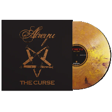
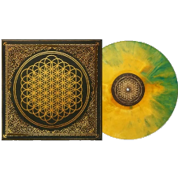

Products
Vinyls
Avenged Sevenfold
- Waking The Fallen
- Waking The Fallen
- Unholy Confessions
- Chapter Four
- Remenissions
- Desecrate Through Reverence
- Eternal Rest
- Second Heartbeat
- Radiant Eclipse
- I Won't See You Tonight (Part 1)
- I Won't See You Tonight (Part 2)
- Clairvoyant Disease
- And All Things Will End
Atreyu

- The Curse
- Blood Children (An Introduction)
- Bleeding Mascara
- Right Side of the Bed
- This Flesh a Tomb
- You Eclipsed by Me
- The Crimson
- The Remembrance Ballad
- An Interlude
- Corseting
- Demonology and Heartache
- My Sanity on the Funeral Pyre
- Nevada's Grace
- Five Vicodin Chased with a Shot of Clarity
Bring Me The Horizon

- Sempiternal
- Can You Feel My Heart
- he House of Wolves
- Empire (Let Them Sing)
- Sleepwalking
- Go to Hell, for Heaven's Sake
- Shadow Moses
- And the Snakes Start to Sing
- Seen It All Before
- Antivist
- Crooked Young
- Hospital for Souls
Linkin Park
- Hybrid Theory
- Papercut
- One Step Closer
- With You
- Point of Authority
- Crawling
- Runaway
- By Myself
- In the End
- A Place for My Head
- forgotten
- Cure for the Itch
- Pushing Me Away